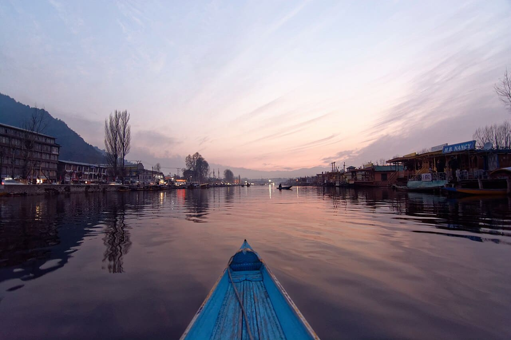
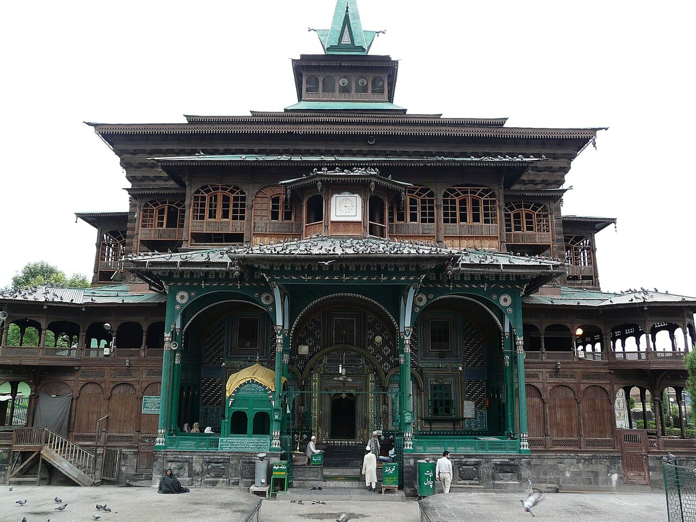

Private journeyLeisurely
Private journeyLeisurelyKashmir Private Comfort Tour
A private planning option with carefully discussed stays and time together.
✓ Private-route planning✓ Stay-category choice
₹36,000per person · estimated
View itinerary Plan a Kashmir or Jammu holiday around your family, your partner or your own small group, with room to choose the stays and experiences you love.
Find your journey ↓ Private journeyLeisurely
Private journeyLeisurelyA private planning option with carefully discussed stays and time together.
 Private journeyLeisurely
Private journeyLeisurelyPine shade, open meadows, and an easy introduction to the Jammu hills.

Private journeyWinter sightseeing · walking and road conditions varyA seven-day private winter escape for two, with two nights each in Gulmarg and Pahalgam and a lakeside Srinagar finish.

Private journeyFlexible city walking · steps and access to discussThree nights in one Srinagar base, with the old city, sacred architecture, museum collections and traditional crafts at the heart of the journey.
Estimated prices per person. Your final package price depends on your dates, group size and chosen stays.